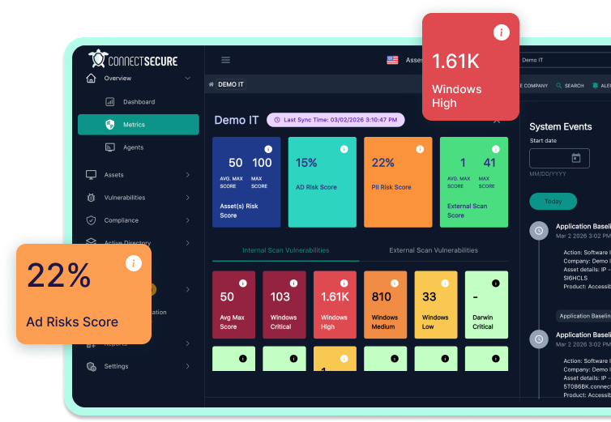

See every internal and external asset
From core infrastructure to third-party apps.
Protect every user. Everywhere.
Manage vulnerabilities, patching, and compliance from one platform that gives you more visibility. And more control.
No risk, no obligation. Get started in minutes.



So many assets. So much risk. So much at stake.
Auditors and insurers need proof. But that takes time.
Too many tools. Too many headaches. Too many fees.
From core infrastructure to third-party apps.
Show a clear, defensible process to auditors and insurers.
Schedule scans and reports, trigger alerts for critical changes.
Prioritize long lists of CVEs into easy next steps.
Detailed remediation plans. High-level updates. Audit-ready proof.

Partners get the most affordable, high-value vulnerability scanning and compliance management out there.
No credit card required.


You can't secure what you can't see. Until now.
Discover endpoints, network devices, and unmanaged assets that aren't visible in your existing tools. See what's connected, what's exposed, and what's been missed.
Unmanaged devices, unknown assets, and misconfigured systems create gaps that attackers can easily exploit. ConnectSecure helps you uncover what's out there so you can take control.


Detect vulnerabilities in software and third-party apps beyond what basic patching reports surface.

Track vulnerabilities and missing updates across Windows, macOS, and Linux systems.

Find firewall issues, open ports, exposed services, and protocol issues across networks and devices.

Identify insecure or vulnerable Windows registry settings tied to known risks and benchmarks.

See outdated or vulnerable drivers across endpoints, systems, and devices.

Identify weak passwords, excessive privileges, insecure configurations, and more.

Surface weak or outdated encryption, cipher issues, and certificate problems across your environment.

See risks introduced by external services, vendors, SaaS platforms, and more.
Fix issues faster with built-in remediation.

Apply updates, configuration changes, or removals, without bouncing between tabs.

Update operating systems and 600+ third-party apps automatically. No more chasing down updates.

Run scripts and registry fixes directly from the platform.


Never get caught off guard again.

Continuously track vulnerabilities, compliance status, and potential exposures.

Get alerted when critical-severity vulnerabilities are detected.

Filter thousands of vulnerabilities across your environment, with direct links to the fix and clear next steps.
Prioritize issues by exploitability, business impact, and risk.
Turn vulnerability and compliance data into clear reports for teams, auditors, and insurers.

Generate executive summaries, remediation-ready reports, and audit-ready documentation.

Use vulnerability trends and remediation history to show improvement over time and explain what was prioritized, why it mattered, and how quickly issues were addressed.

Schedule reports to be sent on a regular cadence so audits don't turn into fire drills.

See your compliance, insurance, and third-party security posture in one place.

Surface misconfigurations, missing control safeguards, and unmanaged risk that could lead to fines or insurance issues.
ConnectSecure aligns vulnerability scanning with frameworks like NIST, CIS, Cyber Essentials, HIPAA, and more. So you're focused on what insurers and auditors actually care about.
Fix common issues with built-in framework templates. Get step-by-step guidance for manual fixes. And easily deploy policies through GPO and WMI filters.
Fix common issues with built-in framework templates. Get step-by-step guidance for manual fixes. And easily deploy policies through GPO and WMI filters.

Assess configurations, permissions, and identity risk across M365 and align them to CIS security benchmarks, without relying on Secure Score alone.

Use the Web Application Scanner to passively scan the mission-critical tools employees use every day, including CRMs, accounting and marketing tools, and more.
You can also use it to scan your websites, web portals, and other internet-facing applications.
See vulnerabilities like cross-site scripting (XSS), remote code execution (RCE), SQL injection, and other issues that put your environment at risk.
Verify that ISO-certified services are operating the way the standard expects.

Scan internet-facing IPs and ranges to understand what's exposed outside your direct control.
See certificate and cipher issues, open or filtered ports, detected vulnerabilities, and any OS or fingerprinting details that can be identified.

Just provide a target, and the platform scans it remotely across your environments.
Get fast visibility into external risks that your team can immediately prioritize and remediate.
Your trial is fully functional and includes everything in our platform:
Get your free trialStart scanning in minutes.

We can scan Windows, macOS, Linux, and ARM-based operating systems.
Operating system patching is supported on Windows and Linux
OS
We also support 550+ Windows application patches.
We can scan Windows, macOS, Linux, and ARM-based operating systems.
Operating system patching is supported on Windows and Linux
OS
We also support 550+ Windows application patches.
We can scan Windows, macOS, Linux, and ARM-based operating systems.
Operating system patching is supported on Windows and Linux
OS
We also support 550+ Windows application patches.
We can scan Windows, macOS, Linux, and ARM-based operating systems.
Operating system patching is supported on Windows and Linux
OS
We also support 550+ Windows application patches.
We can scan Windows, macOS, Linux, and ARM-based operating systems.
Operating system patching is supported on Windows and Linux
OS
We also support 550+ Windows application patches.
We can scan Windows, macOS, Linux, and ARM-based operating systems.
Operating system patching is supported on Windows and Linux
OS
We also support 550+ Windows application patches.
We can scan Windows, macOS, Linux, and ARM-based operating systems.
Operating system patching is supported on Windows and Linux
OS
We also support 550+ Windows application patches.